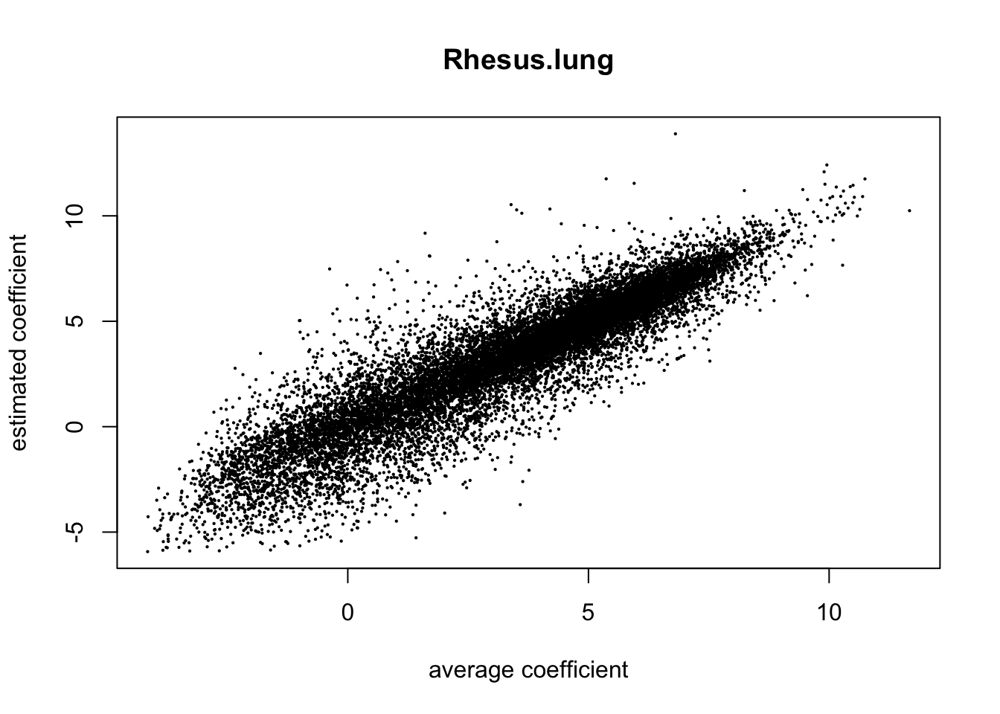
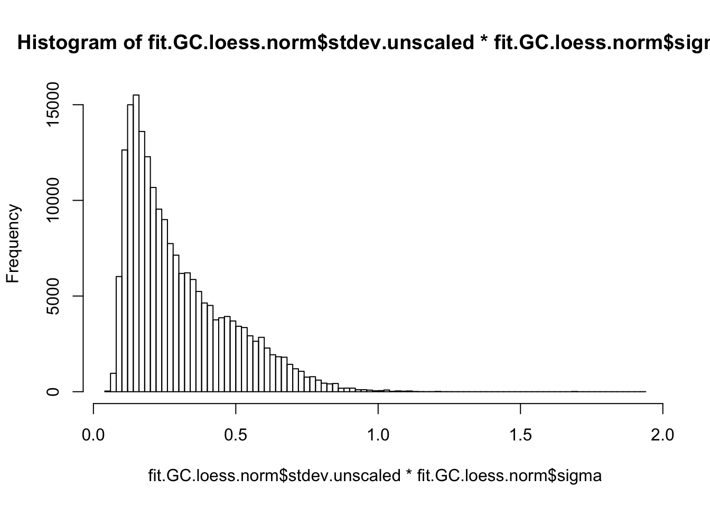
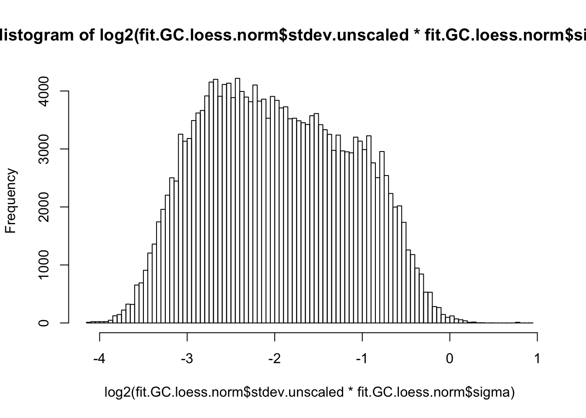
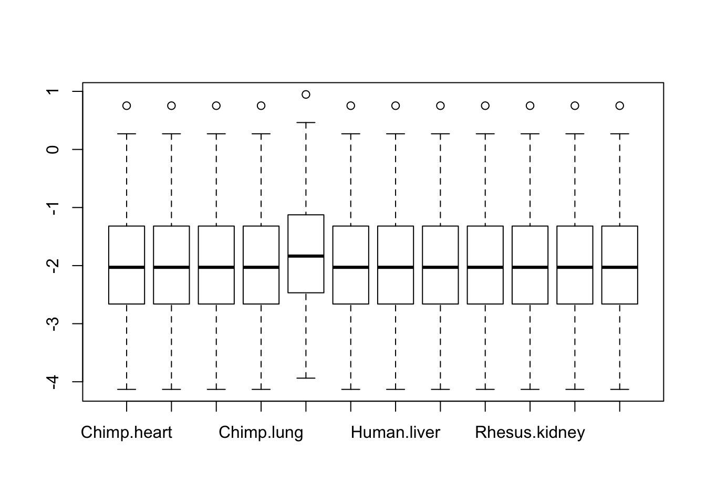
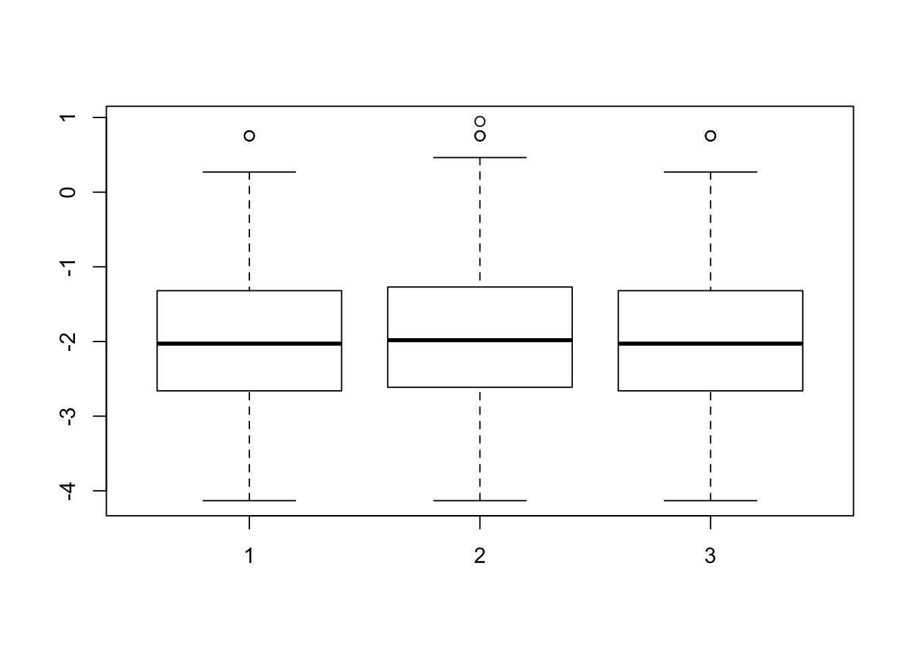
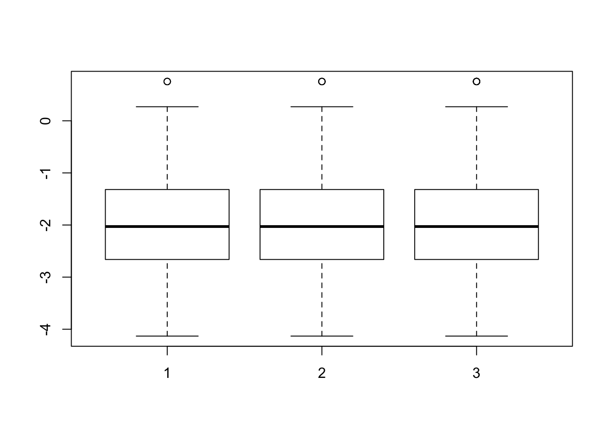
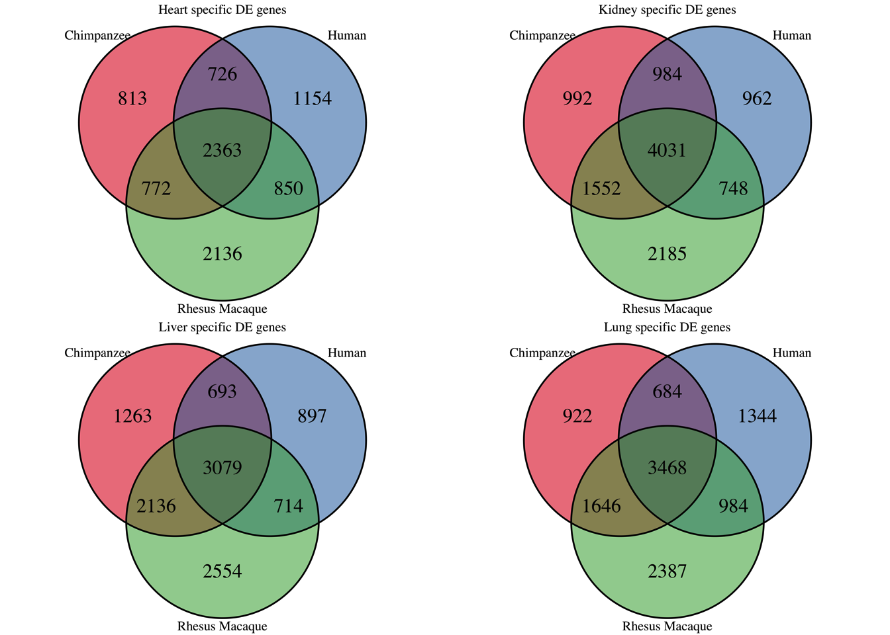
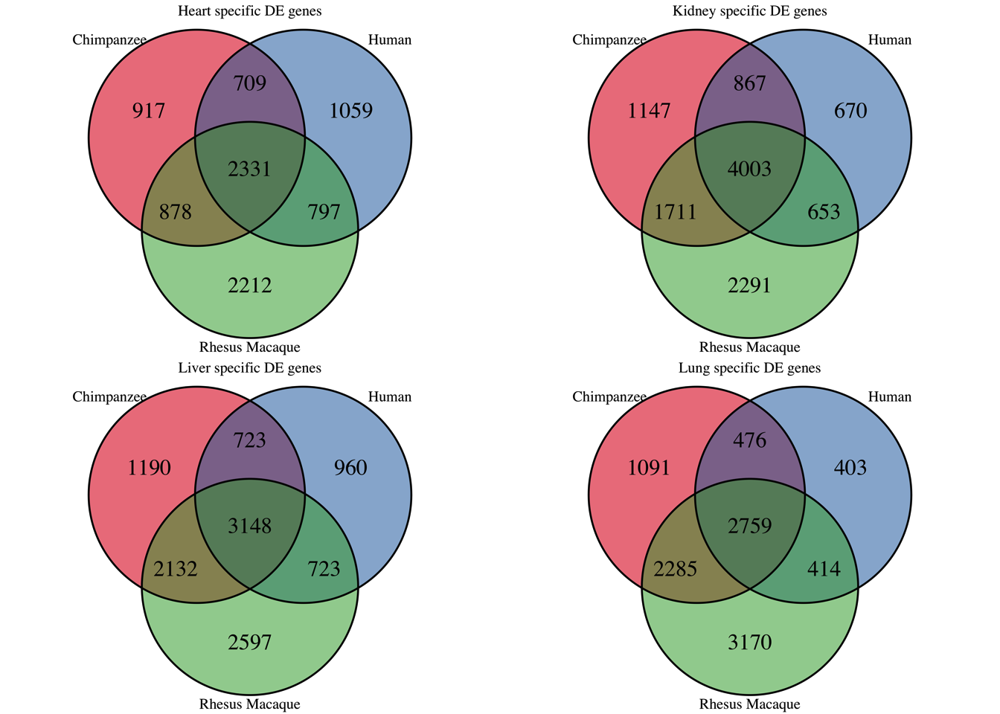

The goal of this script is to find a list of differentially expressed genes between tissues and between species. The majority of the code for this section was written by Julien Roux.
# Load libraries
library("gplots")##
## Attaching package: 'gplots'## The following object is masked from 'package:stats':
##
## lowesslibrary("ggplot2")
library("RColorBrewer")
library("scales")
library("edgeR")## Loading required package: limmalibrary("R.utils")## Loading required package: R.oo## Loading required package: R.methodsS3## R.methodsS3 v1.7.1 (2016-02-15) successfully loaded. See ?R.methodsS3 for help.## R.oo v1.20.0 (2016-02-17) successfully loaded. See ?R.oo for help.##
## Attaching package: 'R.oo'## The following objects are masked from 'package:methods':
##
## getClasses, getMethods## The following objects are masked from 'package:base':
##
## attach, detach, gc, load, save## R.utils v2.3.0 (2016-04-13) successfully loaded. See ?R.utils for help.##
## Attaching package: 'R.utils'## The following object is masked from 'package:utils':
##
## timestamp## The following objects are masked from 'package:base':
##
## cat, commandArgs, getOption, inherits, isOpen, parse, warningslibrary("plyr")
library("limma")
library("VennDiagram")## Loading required package: grid## Loading required package: futile.loggersource("~/Reg_Evo_Primates/ashlar-trial/analysis/functions.R")
# Load colors
colors <- colorRampPalette(c(brewer.pal(9, "Blues")[1],brewer.pal(9, "Blues")[9]))(100)
pal <- c(brewer.pal(9, "Set1"), brewer.pal(8, "Set2"), brewer.pal(12, "Set3"))
# Load the data (GC content normalization+TMM+voom+cyclic loess normalization)
GC.loess.norm.voom <- read.delim("~/Reg_Evo_Primates/ashlar-trial/data/gc_cyclic_loess_random_var_gene_exp_counts")
samples <- read.delim("~/Reg_Evo_Primates/ashlar-trial/data/Sample_info_RNAseq_limma.txt")
# Eliminate H1H
samples <- samples[-17,]
dim(samples)## [1] 47 4# Make labels
labels <- paste(samples$Species, samples$Tissue, sep=" ")## To make contrasts easier to formulate, we rename factors species and tissue in a single factor
condition <- factor(paste(samples$Species,samples$Tissue,sep="."))
design <- model.matrix(~ 0 + condition)
colnames(design) <- gsub("condition", "", dput(colnames(design)))## c("conditionChimp.heart", "conditionChimp.kidney", "conditionChimp.liver",
## "conditionChimp.lung", "conditionHuman.heart", "conditionHuman.kidney",
## "conditionHuman.liver", "conditionHuman.lung", "conditionRhesus.heart",
## "conditionRhesus.kidney", "conditionRhesus.liver", "conditionRhesus.lung"
## )# From TMM_voom_on_GC_normalized_data
corfit_consensus = 0.1888776
# Run lmFit and eBayes in limma
fit.GC.loess.norm <- lmFit(GC.loess.norm.voom, design, block=samples$Individual, correlation=corfit_consensus)
fit.GC.loess.norm <- eBayes(fit.GC.loess.norm)
# MA Plots
## If 'MA' is an 'MArrayLM' object, then the plot is a fitted model MA-plot in which the estimated coefficient is on the y-axis and the average A-value is on the x-axis.
limma::plotMA(fit.GC.loess.norm, array=1, xlab="average coefficient", ylab="estimated coefficient")## Warning in plot.window(...): "array" is not a graphical parameter## Warning in plot.xy(xy, type, ...): "array" is not a graphical parameter## Warning in axis(side = side, at = at, labels = labels, ...): "array" is not
## a graphical parameter
## Warning in axis(side = side, at = at, labels = labels, ...): "array" is not
## a graphical parameter## Warning in box(...): "array" is not a graphical parameter## Warning in title(...): "array" is not a graphical parameter
## - Potential caveat: variances could be different between human, chimp and rhesus (see Gordon Smyth email, 7 June 2013).
## We look at the standard error for each condition
hist(fit.GC.loess.norm$stdev.unscaled * fit.GC.loess.norm$sigma, breaks=100)
hist(log2(fit.GC.loess.norm$stdev.unscaled * fit.GC.loess.norm$sigma), breaks=100)
boxplot(log2(fit.GC.loess.norm$stdev.unscaled * fit.GC.loess.norm$sigma))
## This seems to be pretty comparable between conditions. The human heart is higher, probably because of H1H missing and H3H with a bit strange behavior
stderror <- log2(fit.GC.loess.norm$stdev.unscaled * fit.GC.loess.norm$sigma)
boxplot(list(stderror[,1:4], stderror[,5:8], stderror[,9:12]))
## A bit higher for human, and a bit lower for rhesus
boxplot(list(stderror[,2:4], stderror[,6:8], stderror[,8:12])) ## excluding heart samples 
# One tissue versus all the others in all species
cm1 <- makeContrasts(
KidneyvsOthers = (Chimp.kidney+Human.kidney+Rhesus.kidney)-((Chimp.liver+Human.liver+Rhesus.liver)+(Chimp.heart+Human.heart+Rhesus.heart)+(Chimp.lung+Human.lung+Rhesus.lung))/3,
LivervsOthers = (Chimp.liver+Human.liver+Rhesus.liver)-((Chimp.kidney+Human.kidney+Rhesus.kidney)+(Chimp.heart+Human.heart+Rhesus.heart)+(Chimp.lung+Human.lung+Rhesus.lung))/3,
HeartvsOthers = (Chimp.heart+Human.heart+Rhesus.heart)-((Chimp.liver+Human.liver+Rhesus.liver)+(Chimp.kidney+Human.kidney+Rhesus.kidney)+(Chimp.lung+Human.lung+Rhesus.lung))/3,
LungvsOthers = (Chimp.lung+Human.lung+Rhesus.lung)-((Chimp.liver+Human.liver+Rhesus.liver)+(Chimp.heart+Human.heart+Rhesus.heart)+(Chimp.kidney+Human.kidney+Rhesus.kidney))/3, levels=design
)
fit1 <- contrasts.fit(fit.GC.loess.norm, cm1)
fit1 <- eBayes(fit1)
top1 <- list(Kidney=topTable(fit1, coef=1, adjust="BH", number=Inf, sort.by="none"), Liver=topTable(fit1, coef=2, adjust="BH", number=Inf, sort.by="none"), Heart=topTable(fit1, coef=3,adjust="BH", number=Inf, sort.by="none"), Lung=topTable(fit1, coef=4, adjust="BH", number=Inf, sort.by="none"))
# Sort by p-value
lapply(top1, function(x) { summary(x$adj.P.Val < 0.01) } ) ## ~ 10,000 significant hits in each list## $Kidney
## Mode FALSE TRUE NA's
## logical 8118 8498 0
##
## $Liver
## Mode FALSE TRUE NA's
## logical 6128 10488 0
##
## $Heart
## Mode FALSE TRUE NA's
## logical 6661 9955 0
##
## $Lung
## Mode FALSE TRUE NA's
## logical 6372 10244 0# Apply a more stringent p-value cutoff
lapply(top1, function(x) { summary(x$adj.P.Val < 1e-10) } ) ## ~2,300 significant hits in each list## $Kidney
## Mode FALSE TRUE NA's
## logical 15061 1555 0
##
## $Liver
## Mode FALSE TRUE NA's
## logical 13401 3215 0
##
## $Heart
## Mode FALSE TRUE NA's
## logical 14076 2540 0
##
## $Lung
## Mode FALSE TRUE NA's
## logical 14229 2387 0# Make the contrast matrix
cm2 <- makeContrasts(
ChimpKidneyvsOthers = Chimp.kidney-(Chimp.liver+Chimp.heart+Chimp.lung)/3,
HumanKidneyvsOthers = Human.kidney-(Human.liver+Human.heart+Human.lung)/3,
RhesusKidneyvsOthers = Rhesus.kidney-(Rhesus.liver+Rhesus.heart+Rhesus.lung)/3,
ChimpLivervsOthers = Chimp.liver-(Chimp.kidney+Chimp.heart+Chimp.lung)/3,
HumanLivervsOthers = Human.liver-(Human.kidney+Human.heart+Human.lung)/3,
RhesusLivervsOthers = Rhesus.liver-(Rhesus.kidney+Rhesus.heart+Rhesus.lung)/3,
ChimpHeartvsOthers = Chimp.heart-(Chimp.liver+Chimp.kidney+Chimp.lung)/3,
HumanHeartvsOthers = Human.heart-(Human.liver+Human.kidney+Human.lung)/3,
RhesusHeartvsOthers = Rhesus.heart-(Rhesus.liver+Rhesus.kidney+Rhesus.lung)/3,
ChimpLungvsOthers = Chimp.lung-(Chimp.liver+Chimp.heart+Chimp.kidney)/3,
HumanLungvsOthers = Human.lung-(Human.liver+Human.heart+Human.kidney)/3,
RhesusLungvsOthers = Rhesus.lung-(Rhesus.liver+Rhesus.heart+Rhesus.kidney)/3,
levels=design
)
fit2 <- contrasts.fit(fit.GC.loess.norm, cm2)
fit2 <- eBayes(fit2)
# Find the top hits by BH adjusted p-value
top2 <- list(ChimpKidney=topTable(fit2, coef=1, adjust="BH", number=Inf, sort.by="none"), ChimpLiver=topTable(fit2, coef=4, adjust="BH", number=Inf, sort.by="none"), ChimpHeart=topTable(fit2, coef=7, adjust="BH", number=Inf, sort.by="none"), ChimpLung=topTable(fit2, coef=10, adjust="BH", number=Inf, sort.by="none"), HumanKidney=topTable(fit2, coef=2, adjust="BH", number=Inf, sort.by="none"), HumanLiver=topTable(fit2, coef=5, adjust="BH", number=Inf, sort.by="none"), HumanHeart=topTable(fit2, coef=8, adjust="BH", number=Inf, sort.by="none"), HumanLung=topTable(fit2, coef=11, adjust="BH", number=Inf, sort.by="none"), RhesusKidney=topTable(fit2, coef=3, adjust="BH", number=Inf, sort.by="none"), RhesusLiver=topTable(fit2, coef=6, adjust="BH", number=Inf, sort.by="none"), RhesusHeart=topTable(fit2, coef=9, adjust="BH", number=Inf, sort.by="none"), RhesusLung=topTable(fit2, coef=12, adjust="BH", number=Inf, sort.by="none"))
# Find number of DE genes at FDR cutoff < 1% for each tissue in all 3 species
summary(top2$ChimpKidney$adj.P.Val < 0.01 & top2$HumanKidney$adj.P.Val < 0.01 & top2$RhesusKidney$adj.P.Val < 0.01) ## 2363 ## Mode FALSE TRUE NA's
## logical 14253 2363 0summary(top2$ChimpHeart$adj.P.Val < 0.01 & top2$HumanHeart$adj.P.Val < 0.01 & top2$RhesusHeart$adj.P.Val < 0.01) ## 3079 ## Mode FALSE TRUE NA's
## logical 13537 3079 0summary(top2$ChimpLiver$adj.P.Val < 0.01 & top2$HumanLiver$adj.P.Val < 0.01 & top2$RhesusLiver$adj.P.Val < 0.01) ## 4031 ## Mode FALSE TRUE NA's
## logical 12585 4031 0summary(top2$ChimpLung$adj.P.Val < 0.01 & top2$HumanLung$adj.P.Val < 0.01 & top2$RhesusLung$adj.P.Val < 0.01) ## 3468 ## Mode FALSE TRUE NA's
## logical 13148 3468 0### Make a Venn Diagram of the results
Tissues <- c("Heart", "Kidney", "Liver", "Lung")
for(i in 1:4){
title <- paste(Tissues[i], "specific DE genes", sep=" ")
mylist <- list()
mylist[["Chimpanzee"]] <- row.names(top2[[names(top2)[i]]])[top2[[names(top2)[i]]]$adj.P.Val < 0.01]
mylist[["Human"]] <- row.names(top2[[names(top2)[i+4]]])[top2[[names(top2)[i+4]]]$adj.P.Val < 0.01]
mylist[["Rhesus Macaque"]] <- row.names(top2[[names(top2)[i+8]]])[top2[[names(top2)[i+8]]]$adj.P.Val < 0.01]
venn.diagram(mylist, filename = paste(Tissues[i], "specific DE genes.png", sep=" "), imagetype = "png", main=title, cex=1.5 , fill = pal[1:3], lty=1, height=2000, width=2000)
}
rl <- lapply(list("Heart specific DE Genes.png", "Kidney specific DE Genes.png", "Liver specific DE Genes.png", "Lung specific DE Genes.png"), png::readPNG)
gl <- lapply(rl, grid::rasterGrob)
do.call(gridExtra::grid.arrange, gl)
We saw in the technical factor analysis that the hours post-mortem that the sample was collected was confounded by species. This could affect the quality of RNA. We will use RIN score as a proxy for RNA quality. Let see how adding RIN score into the model (via the design matrix) affects the amount of tissue-specific DE genes.
# Retrieve RIN score for each sample
RNA_seq_info <- read.csv("~/Reg_Evo_Primates/ashlar-trial/data/RNA_seq_info.csv")
RIN <- as.data.frame(RNA_seq_info[,22])
RIN <- RIN[-31,]
# Remake design matrix
condition <- factor(paste(samples$Species,samples$Tissue,sep="."))
condition <- as.data.frame(condition)
condition <- condition[-31,]
design <- model.matrix(~ 0 + condition + RIN)
colnames(design) <- gsub("condition", "", dput(colnames(design)))## c("conditionChimp.heart", "conditionChimp.kidney", "conditionChimp.liver",
## "conditionChimp.lung", "conditionHuman.heart", "conditionHuman.kidney",
## "conditionHuman.liver", "conditionHuman.lung", "conditionRhesus.heart",
## "conditionRhesus.kidney", "conditionRhesus.liver", "conditionRhesus.lung",
## "RIN")# Run lmFit and eBayes in limma (we have to take out sample 31 because its RIN score was not recorded)
samples <- samples[-31,]
fit.GC.loess.norm <- lmFit(GC.loess.norm.voom[,-31], design, block=samples$Individual, correlation=corfit_consensus)
fit.GC.loess.norm <- eBayes(fit.GC.loess.norm)
# Make the contrast matrix
cm2 <- makeContrasts(
ChimpKidneyvsOthers = Chimp.kidney-(Chimp.liver+Chimp.heart+Chimp.lung)/3,
HumanKidneyvsOthers = Human.kidney-(Human.liver+Human.heart+Human.lung)/3,
RhesusKidneyvsOthers = Rhesus.kidney-(Rhesus.liver+Rhesus.heart+Rhesus.lung)/3,
ChimpLivervsOthers = Chimp.liver-(Chimp.kidney+Chimp.heart+Chimp.lung)/3,
HumanLivervsOthers = Human.liver-(Human.kidney+Human.heart+Human.lung)/3,
RhesusLivervsOthers = Rhesus.liver-(Rhesus.kidney+Rhesus.heart+Rhesus.lung)/3,
ChimpHeartvsOthers = Chimp.heart-(Chimp.liver+Chimp.kidney+Chimp.lung)/3,
HumanHeartvsOthers = Human.heart-(Human.liver+Human.kidney+Human.lung)/3,
RhesusHeartvsOthers = Rhesus.heart-(Rhesus.liver+Rhesus.kidney+Rhesus.lung)/3,
ChimpLungvsOthers = Chimp.lung-(Chimp.liver+Chimp.heart+Chimp.kidney)/3,
HumanLungvsOthers = Human.lung-(Human.liver+Human.heart+Human.kidney)/3,
RhesusLungvsOthers = Rhesus.lung-(Rhesus.liver+Rhesus.heart+Rhesus.kidney)/3,
levels=design
)
fit2 <- contrasts.fit(fit.GC.loess.norm, cm2)
fit2 <- eBayes(fit2)
# Find the top hits by BH adjusted p-value
top2 <- list(ChimpKidney=topTable(fit2, coef=1, adjust="BH", number=Inf, sort.by="none"), ChimpLiver=topTable(fit2, coef=4, adjust="BH", number=Inf, sort.by="none"), ChimpHeart=topTable(fit2, coef=7, adjust="BH", number=Inf, sort.by="none"), ChimpLung=topTable(fit2, coef=10, adjust="BH", number=Inf, sort.by="none"), HumanKidney=topTable(fit2, coef=2, adjust="BH", number=Inf, sort.by="none"), HumanLiver=topTable(fit2, coef=5, adjust="BH", number=Inf, sort.by="none"), HumanHeart=topTable(fit2, coef=8, adjust="BH", number=Inf, sort.by="none"), HumanLung=topTable(fit2, coef=11, adjust="BH", number=Inf, sort.by="none"), RhesusKidney=topTable(fit2, coef=3, adjust="BH", number=Inf, sort.by="none"), RhesusLiver=topTable(fit2, coef=6, adjust="BH", number=Inf, sort.by="none"), RhesusHeart=topTable(fit2, coef=9, adjust="BH", number=Inf, sort.by="none"), RhesusLung=topTable(fit2, coef=12, adjust="BH", number=Inf, sort.by="none"))
# Find number of DE genes at FDR cutoff < 1% for each tissue in all 3 species
summary(top2$ChimpKidney$adj.P.Val < 0.01 & top2$HumanKidney$adj.P.Val < 0.01 & top2$RhesusKidney$adj.P.Val < 0.01) ## 2363 (no RIN) v. 2331 (RIN) ## Mode FALSE TRUE NA's
## logical 14285 2331 0summary(top2$ChimpHeart$adj.P.Val < 0.01 & top2$HumanHeart$adj.P.Val < 0.01 & top2$RhesusHeart$adj.P.Val < 0.01) ## 3079 (no RIN) v. 3148 (RIN) ## Mode FALSE TRUE NA's
## logical 13468 3148 0summary(top2$ChimpLiver$adj.P.Val < 0.01 & top2$HumanLiver$adj.P.Val < 0.01 & top2$RhesusLiver$adj.P.Val < 0.01) ## 4031 (no RIN) v. 4003 (RIN) ## Mode FALSE TRUE NA's
## logical 12613 4003 0summary(top2$ChimpLung$adj.P.Val < 0.01 & top2$HumanLung$adj.P.Val < 0.01 & top2$RhesusLung$adj.P.Val < 0.01) ## 3468 (no RIN) v. 2759 (RIN)## Mode FALSE TRUE NA's
## logical 13857 2759 0### Make a Venn Diagram of the results
Tissues <- c("Heart", "Kidney", "Liver", "Lung")
for(i in 1:4){
title <- paste(Tissues[i], "specific DE genes", sep=" ")
mylist <- list()
mylist[["Chimpanzee"]] <- row.names(top2[[names(top2)[i]]])[top2[[names(top2)[i]]]$adj.P.Val < 0.01]
mylist[["Human"]] <- row.names(top2[[names(top2)[i+4]]])[top2[[names(top2)[i+4]]]$adj.P.Val < 0.01]
mylist[["Rhesus Macaque"]] <- row.names(top2[[names(top2)[i+8]]])[top2[[names(top2)[i+8]]]$adj.P.Val < 0.01]
venn.diagram(mylist, filename = paste(Tissues[i], "specific DE genes (with RIN).png", sep=" "), imagetype = "png", main=title, cex=1.5 , fill = pal[1:3], lty=1, height=2000, width=2000)
}
# View the Venn Diagram
rl <- lapply(list("Heart specific DE Genes (with RIN).png", "Kidney specific DE Genes (with RIN).png", "Liver specific DE Genes (with RIN).png", "Lung specific DE Genes (with RIN).png"), png::readPNG)
gl <- lapply(rl, grid::rasterGrob)
do.call(gridExtra::grid.arrange, gl)
# Make new contrast matrix
cm4 <- makeContrasts(
ChimpKidneyvsLiver = Chimp.kidney-Chimp.liver,
HumanKidneyvsLiver = Human.kidney-Human.liver,
RhesusKidneyvsLiver = Rhesus.kidney-Rhesus.liver,
ChimpKidneyvsLung = Chimp.kidney-Chimp.lung,
HumanKidneyvsLung = Human.kidney-Human.lung,
RhesusKidneyvsLung = Rhesus.kidney-Rhesus.lung,
ChimpKidneyvsHeart = Chimp.kidney-Chimp.heart,
HumanKidneyvsHeart = Human.kidney-Human.heart,
RhesusKidneyvsHeart = Rhesus.kidney-Rhesus.heart,
ChimpHeartvsLiver = Chimp.heart-Chimp.liver,
HumanHeartvsLiver = Human.heart-Human.liver,
RhesusHeartvsLiver = Rhesus.heart-Rhesus.liver,
ChimpHeartvsLung = Chimp.heart-Chimp.lung,
HumanHeartvsLung = Human.heart-Human.lung,
RhesusHeartvsLung = Rhesus.heart-Rhesus.lung,
ChimpLungvsLiver = Chimp.lung-Chimp.liver,
HumanLungvsLiver = Human.lung-Human.liver,
RhesusLungvsLiver = Rhesus.lung-Rhesus.liver,
levels=design
)
fit4 <- contrasts.fit(fit.GC.loess.norm[-31,], cm4)
fit4 <- eBayes(fit4)
top4 <- list(ChimpKidneyvsLiver=topTable(fit4, coef=1, adjust="BH", number=Inf, sort.by="none"), ChimpKidneyvsLung=topTable(fit4, coef=4, adjust="BH", number=Inf, sort.by="none"), ChimpKidneyvsHeart=topTable(fit4, coef=7, adjust="BH", number=Inf, sort.by="none"), ChimpHeartvsLiver=topTable(fit4, coef=10, adjust="BH", number=Inf, sort.by="none"), ChimpHeartvsLung=topTable(fit4, coef=13, adjust="BH", number=Inf, sort.by="none"), ChimpLungvsLiver=topTable(fit4, coef=16, adjust="BH", number=Inf, sort.by="none"), HumanKidneyvsLiver=topTable(fit4, coef=2, adjust="BH", number=Inf, sort.by="none"), HumanKidneyvsLung=topTable(fit4, coef=5, adjust="BH", number=Inf, sort.by="none"), HumanKidneyvsHeart=topTable(fit4, coef=8, adjust="BH", number=Inf, sort.by="none"), HumanHeartvsLiver=topTable(fit4, coef=11, adjust="BH", number=Inf, sort.by="none"), HumanHeartvsLung=topTable(fit4, coef=14, adjust="BH", number=Inf, sort.by="none"), HumanLungvsLiver=topTable(fit4, coef=17, adjust="BH", number=Inf, sort.by="none"), RhesusKidneyvsLiver=topTable(fit4, coef=3, adjust="BH", number=Inf, sort.by="none"), RhesusKidneyvsLung=topTable(fit4, coef=6, adjust="BH", number=Inf, sort.by="none"), RhesusKidneyvsHeart=topTable(fit4, coef=9, adjust="BH", number=Inf, sort.by="none"), RhesusHeartvsLiver=topTable(fit4, coef=12, adjust="BH", number=Inf, sort.by="none"), RhesusHeartvsLung=topTable(fit4, coef=15, adjust="BH", number=Inf, sort.by="none"), RhesusLungvsLiver=topTable(fit4, coef=18, adjust="BH", number=Inf, sort.by="none"))# Remake design matrix
samples_no_NA <- samples
design <- model.matrix(~ 0 + factor(samples_no_NA$Species) + factor(samples_no_NA$Tissue) + factor(samples_no_NA$Species):factor(samples_no_NA$Tissue) + RIN)
colnames(design) <- gsub("condition", "", dput(colnames(design)))## c("factor(samples_no_NA$Species)Chimp", "factor(samples_no_NA$Species)Human",
## "factor(samples_no_NA$Species)Rhesus", "factor(samples_no_NA$Tissue)kidney",
## "factor(samples_no_NA$Tissue)liver", "factor(samples_no_NA$Tissue)lung",
## "RIN", "factor(samples_no_NA$Species)Human:factor(samples_no_NA$Tissue)kidney",
## "factor(samples_no_NA$Species)Rhesus:factor(samples_no_NA$Tissue)kidney",
## "factor(samples_no_NA$Species)Human:factor(samples_no_NA$Tissue)liver",
## "factor(samples_no_NA$Species)Rhesus:factor(samples_no_NA$Tissue)liver",
## "factor(samples_no_NA$Species)Human:factor(samples_no_NA$Tissue)lung",
## "factor(samples_no_NA$Species)Rhesus:factor(samples_no_NA$Tissue)lung"
## )# Run lmFit and eBayes in limma (we have to take out sample 31 because its RIN score was not recorded)
fit.GC.loess.norm <- lmFit(GC.loess.norm.voom[,-31], design, block=samples_no_NA$Individual, correlation=corfit_consensus)
fit.GC.loess.norm <- eBayes(fit.GC.loess.norm)
# p_value_interaction <- fit.GC.loess.norm$p.value
# p_value_interaction <- p.adjust(p_value_interaction , method = "fdr")
# p_value_interaction_count <- p_value_interaction[ p_value_interaction[,1] <= abs(0.1), ]